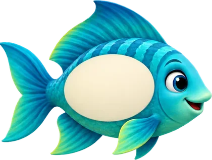
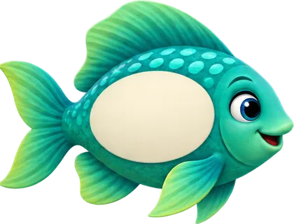

+
5. SINIF · KESİR · ONDALIK · YÜZDE
Çalışma Kağıdı 1
Büyüteçle Eş Avı
Aynı sayı, farklı kılıklar: kesir, ondalık ve yüzde.Ad Soyad:
Tarih:
Puan:
Hatırla
Denk kesirPay ve paydayı aynı sayıyla çarp: 1/4 = 2/8
OndalıkPaydayı 10 ya da 100 yap: 1/4 = 25/100 = 0,25
YüzdeYüzde, 100'de demek: 25/100 = %25
1/2= 0,5 = %50
1/4= 0,25 = %25
3/4= 0,75 = %75
1/5= 0,2 = %20
Tuzak!1/4 ≠ 0,14. Rakamları yan yana yazma!
1
★☆☆
Her satırda aynı sayı var. Boş kutuları doldur. (Kesri sadeleştir.)
| Kesir | Ondalık gösterim | Yüzde |
|---|---|---|
| 12 | ||
| 310 | ||
| 0,75 | ||
| %40 |

?
2
24A
E
★☆☆
Büyüteçle bak! Bu balıklardan hangisi 1/2'nin eşi DEĞİL? Harfini daire içine al.
240,5
B%50
C0,12
D
510Neden?
3
★★☆
Kılık değiştiren sayı! Kutulara gelecek sayıları yaz.
35
=
10
=
0,
=
100
=
%
Sayfa 1 / 2
 @mathpopwithru
@mathpopwithru
×
Büyüteçle Eş Avı
devam
4
25
★★☆
Balıkları taşıdıkları sayılara göre küçükten büyüğe sırala.
0,3
%35
14
25
<
<
<
5
★★☆
Hata avı! Ece tahtaya aşağıdakini yazdı. Ece'nin hatası nerede? Doğrusunu yaz.
Ece:
710
= 0,7 = %7
6
★★☆
Kutulara <, > ya da = yaz.
0,8%8
320%15
140,4
%6035
7
★★★
Bir akvaryumda 20 balık var. Balıkların %35'i turuncu, 1/4'ü mavi, geri kalanı mor. Kaç tane mor balık vardır? Mor balıkların tüm balıklara oranını ondalık gösterimle yaz.
8
★★★
YENİ NESİL
Deniz, balıkları için 80 TL'lik balık yemi alacak. Üç dükkân farklı indirim yapıyor:
A DükkânıFiyatın %25'i kadar indirim
B DükkânıFiyatın 1/5'i kadar indirim
C DükkânıFiyatın 0,3'ü kadar indirim
Deniz yemi en ucuza hangi dükkândan alır? Kaç TL öder?
Kendini değerlendir:
☐ Çok kolaydı☐ Biraz zorlandım☐ Tekrar etmeliyim
Sayfa 2 / 2
@mathpopwithru